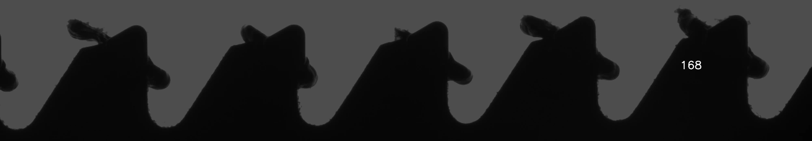
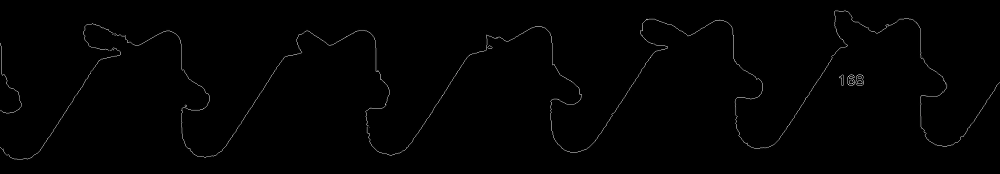
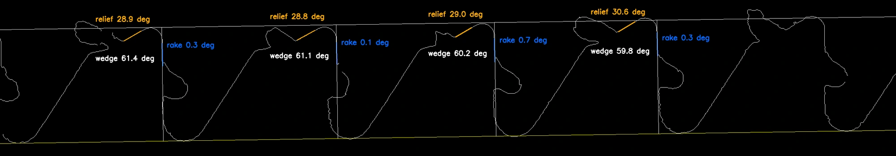

04 / Industrial inspection & metrology
Manuscript under reviewCarbide-tip reciprocating blade inspection
Connecting computer vision and geometric measurement to inspect relief angle, rake angle, and tooth height.
- Context
- Industrial inspection & metrology
- My contribution
- Inspection system development; first-listed manuscript author
- Toolkit
- Python · YOLO · Canny · RANSAC · Basler camera · Telecentric optics · Gage R&R

The challenge
Measuring a small, consequential geometry.
Carbide-tip reciprocating blade teeth contain geometric features that matter to inspection: relief angle, rake angle, and tooth height.
This work investigates a camera based method that combines learned classification with geometric measurement, supported by repeatability and reproducibility analysis.
Technical approach
Learned recognition with explicit geometry.
The imaging setup uses controlled silhouette capture, a Basler camera, and telecentric optics. YOLO classification is paired with Canny edge extraction and robust geometric fitting using RANSAC.
That combination separates recognizing the feature from measuring its geometry. The pipeline estimates relief angle, rake angle, and height from fitted edges.
- 01
Establish the image
Controlled illumination and optics form a consistent silhouette for edge analysis.
- 02
Extract and fit features
Classification identifies the relevant tooth region; edge processing and robust line fitting support the geometric measurement.
- 03
Study the measurement system
Gage R&R analysis compares variability in automated and manual measurements.
Development-stage image pipeline
Making the geometry explicit.



Research & contribution
Inspection backed by measurement analysis.
I contributed to development of the inspection system and am the first-listed author of the associated manuscript, Evaluating Gage R&R of AI-Based Computer Vision Systems and Manual Measurements.
The manuscript is coauthored with Lucas Whitmer, Roan Kirwin, and C. S. Rakurty and is currently under review.